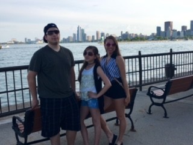
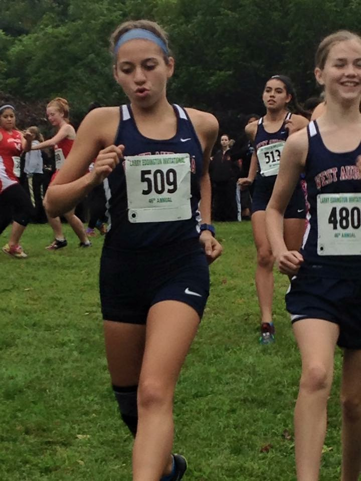

About Me
My name is Evelyn Torres. Some people call me Ev or Evie. I am 17 years old and I am from Aurora, Illinois. I am a middle child. I have an older brother, Erik, who is a junior at U of I studying electrical engineering and I have a younger sister, Eilanie, who is going into 6th grade. She plays the saxophone, volleyball, and softball.
I will be a senior this year at West Aurora High School. I run cross country and track at West, I play the euphonium in band, I will be the National Honors Society President this year, and I am the 2016-2017 Group Commander for our Air Force Junior Reserve Officer Training Corps program at West.
I am also the Unarmed Exhibtion Commander for our drill team. Along with Exhibtion, I am on the Varsity Unarmed Infantry Drill Regulation team and I am right guard on the Varsity Girls Color Guard. I love hanging out with friends and just living life. So, yeah that's just a little bit about me!

Projects in Girls Who Code
Now that I have introduced myself, I would like to show you some of the things we have created through Girls Who Code. Click on any of the links to the left to begin looking through my projects.